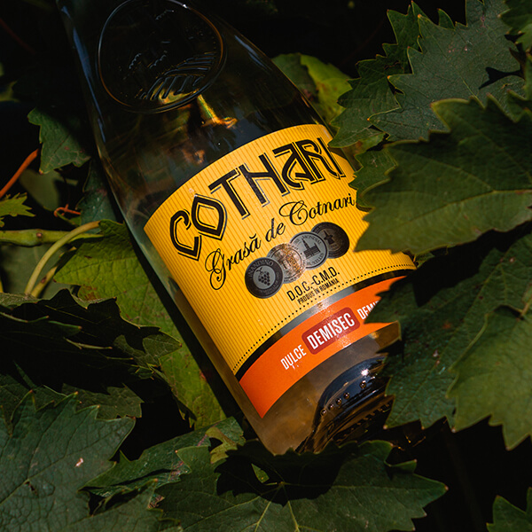

Romanian Wine "Cotnari"

The first historical mentions of the Cotnari vineyard date back to the 18th century. Nicolae Costin writes that the Cotnari vineyards were known before the foundation of Moldavia in 1359, and A.D. Xenopol mentions the existence of the vineyards here in 1288. Radu Rosetti goes on to mention the vineyard at 1250.
As early as the beginning of the 15th century, the accounts of the Cotnari vineyard became substantial, during the reigns of Peter II (1444-1449), Stefan cel Mare (1457-1504) and Despot-Voda (1561-1563) , when the vineyard reached a maximum share both in the size of the area cultivated with the vine and in the quality of the wine obtained. The first evidence of the vineyard’s total vineyard date back to 1830 when 500 pogonas out of 720 of Cotnari belonged to the locals
The COTNARI company is the heart of the Cotnari vineyard since 1948. The love of locals for the growth and fruit
of the vine has taught us to cherish every sun-carrying bean and to share with others the joy of life.
The wine road is long but full of rewards. We take care of the over 1,700 hectares of vineyards through
high-performance agricultural work. Our specialists work in the laboratory of the compound or in the vineyard to
obtain new varieties of vines and new wine varieties.
Cotnari wines have exceptional qualities obtained by limiting average grape production to one hectare to just
70-80% compared to other vineyards in Romania or in wine-growing countries. Our company will always choose
quality at the expense of quantity. In our wine-house, organized on scientific criteria, we keep the most
successful collections since 1956
The “holy vineyards” of Cotnari, as Dimitrie Cantemir called them, are the fruit of an ancient mining and winery occupation. From antiquity until today, the vine has continuously embraced the mild hills of the area, taking full advantage of their peculiarities.
The vineyard is housed by winds and cold local streams, due to the phenomenon of phoenization of air masses, which causes a heating process. The May-September period is characterized by low cloudiness, favoring sunstroke, grape growth and sugar accumulation. The soils are extremely favorable to the vineyard culture, with a lush, sandy texture, rich in humus and changeable bases.

Today we celebrate with honor, after the ancient tradition, Wine Day - the oldest and best liquor, Composed
of so many Romanians In our famous vineyards.
The Cotnari vineyard is part of the wine-growing region of Moldavia’s Plateau, being located for the most part on the Cotnari Coast - Harlau, an important part of the Moldavian Coast. The well-known Romanian academician Valeriu D. Cotea appreciates it as “one of the most famous wine regions in our country”.
If you want to know more about us click here